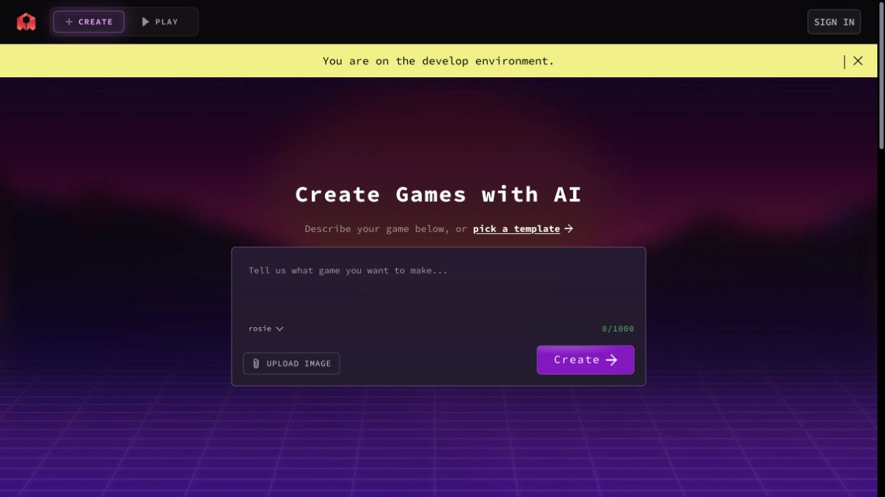
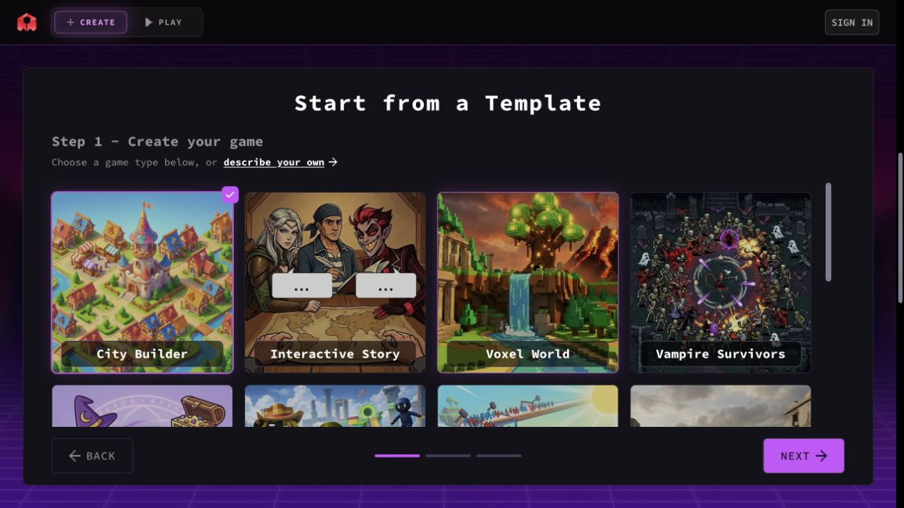
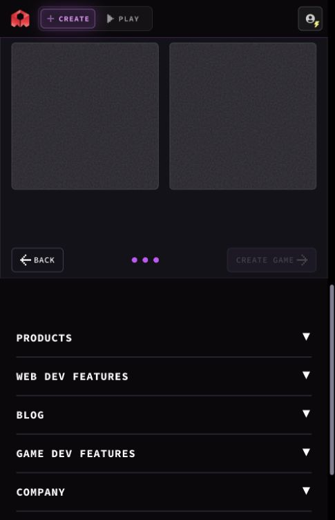
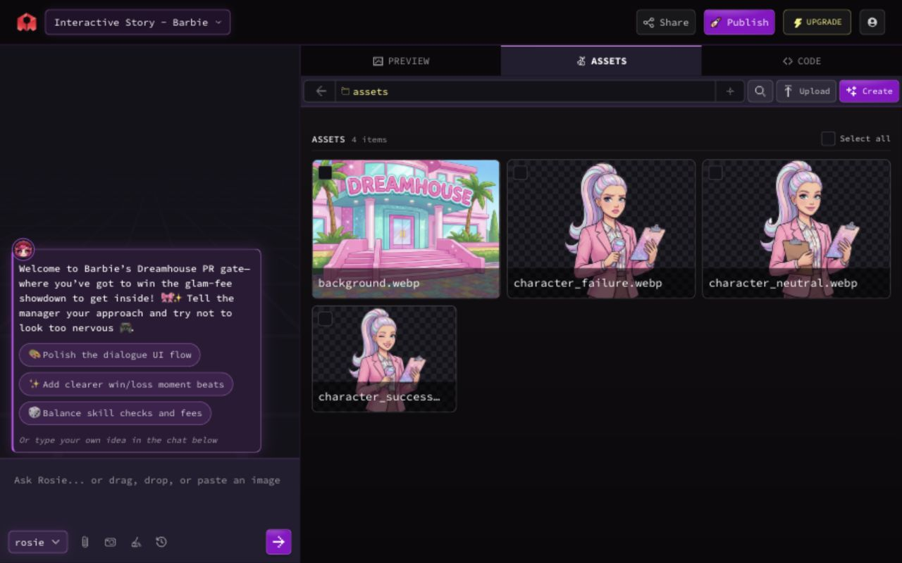
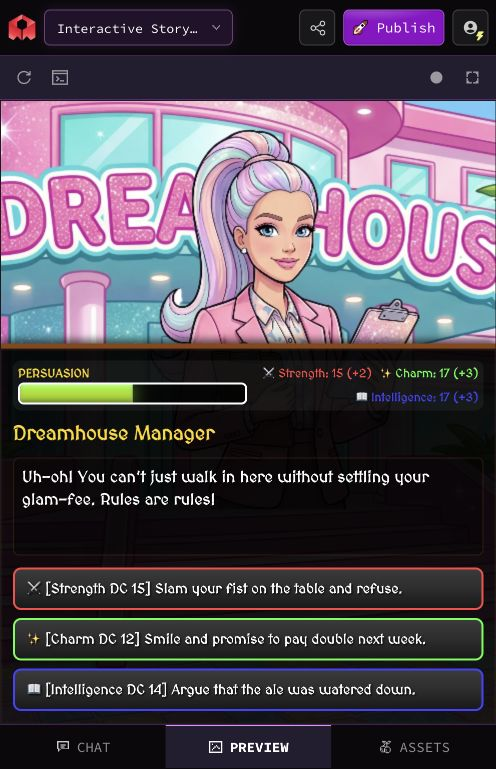
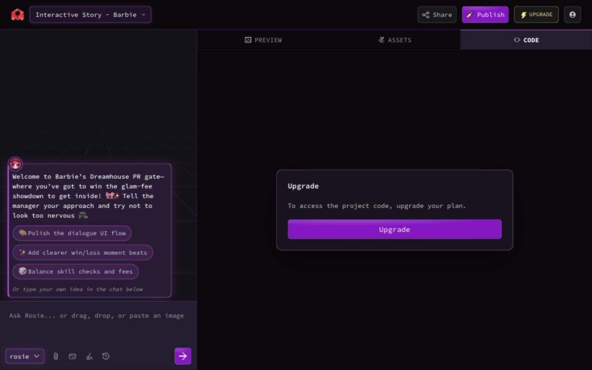
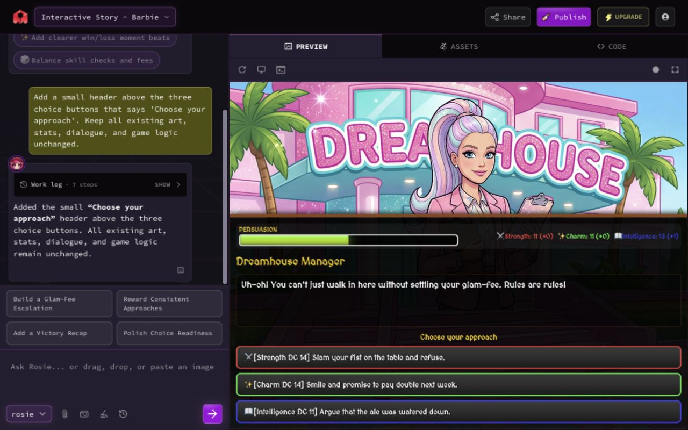
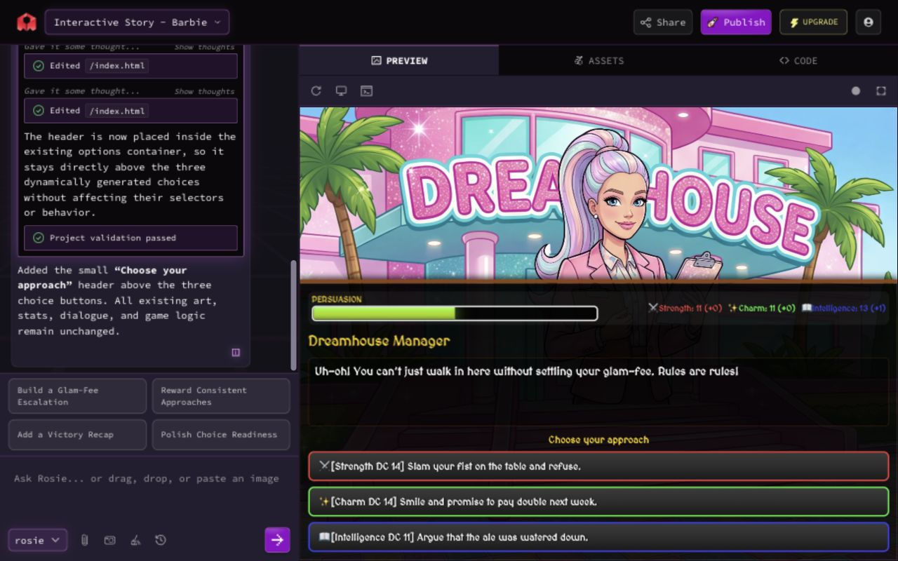
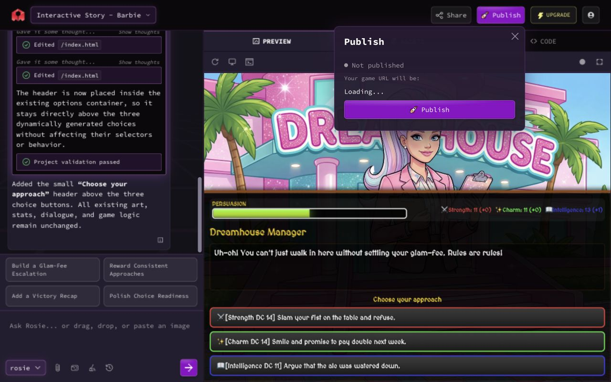

它不是“文本生成游戏”，而是一条 AI 游戏生产线
核心壁垒不只在生成，而在 Agent、项目状态、资产、构建、版本、额度与分发之间的编排。
本次 Rosie 可见工具步骤
一次低范围文本修改实测
模板初始化后可见资产
页面可选模型/路由入口
端到端闭环
社区不是末端画廊，而是发现、游玩、分享与 Remix 回流到创作的增长环。
| 阶段 | 系统承诺 | 真实观察 | 证据 |
|---|---|---|---|
| 初始化 | 快速从模板起步 | 最终创建前就出现 4 个资产准备槽位 | 已确认 S03–S04 |
| AI 修改 | 自然语言直接改变游戏 | Rosie 列目录、读 3 个文件、改同一文件两次、验证 | 已确认 S18 / S20 |
| 预览 | 即时看到结果 | Agent 回复后仍需“Loading latest changes”再到稳定态 | 已确认 S19 / S19a |
| 分发 | 发布后可分享与游玩 | 未发布时 Share 明确阻断；公开页含互动与 Remix | 已确认 S05 / S23 / S24 |
核心页面证据
下列截图来自本次真实会话；附图说明只陈述页面可见事实。









九层产品架构
越往下越接近平台能力。内部基础设施缺少直接证据，因此明确标注为推断。
匿名访客、创作者、玩家、Remixer；Create、Play、公开 URL。
已确认首页 Prompt、模板向导、Chat、Preview、Assets、Code、设置、历史、发布/分享。
已确认游戏生成、AI 编码、资产管理、运行时预览、公开游戏页、社区发现。
已确认Rosie、可见执行步骤与下一步建议；运行协调器边界未知。
混合证据列目录、读/改文件、验证；构建、资产、版本、额度、发布服务。
混合证据Rosie、Claude、Gemini、GPT、Grok 选择器；实际路由与降级策略未知。
混合证据User、Project、File、Asset、AgentRun、Version、Build、Credit、Publication。
实体确认 / 关系推断模板、社区作品、项目 agents.md、初始代码/视觉资产与分类元数据。
已确认Auth、iframe、托管/CDN、支付/套餐；队列、监控、审计与风控实现未知。
部分推断Rosie 是唯一被页面直接命名的 Agent
资产生成、构建、发布等只作为服务角色描述，避免把普通后台能力过度人格化。
输入契约
自由文本 Prompt、图片/截图、所选模型、当前项目上下文和项目级指导。
工具契约
本次可见：列目录、读取文件、编辑文件、项目验证。其参数与隐藏调用未知。
输出契约
文件变更、验证结果、自然语言摘要、建议下一步与 Credits 消耗。
agents.md 是项目级指导，不是 Rosebud 官方系统 Prompt；本报告不声称获得隐藏源码、内部思维链或真实供应商路由。真正的系统中枢是跨对象可追踪性
Prompt 只是入口。可靠生产要求 Project、Run、ToolStep、Version、Build、Credit 和 Publication 能互相追溯。
| 实体 | 建议主键/字段 | 与谁关联 | 证据判断 |
|---|---|---|---|
| Project | project_id, owner, name, template, status | File / Asset / Version / Publication | 存在确认 |
| AgentRun | run_id, prompt, model_option, state, timing | ToolStep / Validation / Build / Credit | 关系推断 |
| Version | version_id, parent_id, title, diff_summary | Run / Project / Build | 存在确认 |
| PreviewBuild | build_id, version_id, state, runtime_url | Run / Validation / Publication | 字段建议 |
| CreditLedger | ledger_id, reserved, actual, refunded | User / Run / pricing_snapshot | 计量确认 |
| Publication | publication_id, build_id, slug, visibility, rights | Project / RemixLineage | 关系推断 |
“Agent 已完成”不等于“用户已经能玩”
这是本次取证最关键的系统级断点。
双完成点
- 回复先于预览完成。
- 黑屏、旧构建或加载中容易被误判。
- 重试可能造成重复消耗。
统一 AgentRun
- 最终完成由 PreviewBuild 稳定态决定。
- 验证凭证、构建 ID、版本与额度绑定。
- 失败保留上一个可运行版本。
模型选择可见，真实路由不可见
UI 提供品牌化模型入口，但不能据此断言后端一对一路由。
页面事实
可见 Rosie、Claude Sonnet/Opus、Gemini Pro/Flash、GPT Terra/Sol、GPT‑5.6 Luna、Grok 4.5。
成本冲突
Rosie 提示通常约 6,000 credits；本次小改动实际消耗 500 credits。
目标机制
提交前给出最小/常见/上限；运行中预留；完成后按步骤归因；失败明确退款规则。
发布页把“作品”转为“可增长内容”
公开页连接游玩、互动、Remix、打赏与推荐，但也把版权和治理风险推到核心路径。
Publish
项目元数据与公开地址。
Play
iframe 运行时和全屏试玩。
Community
点赞、评论、作者、推荐。
Re-creation
Remix 回流到新项目，Tip 支持创作者经济。
产品全景架构图
实线为已确认，虚线为推断，点线为目标建议。横向滚动可查看完整图。
关键风险不是“能否生成”，而是“能否可信地交付”
优先处理完成语义、权利治理与成本透明。
完成态错位
Rosie 回复先于预览稳定，用户可能重复提交或误判结果。
版权与 Remix
知名 IP 风格内容、商用权、Remix、Tip 与公开分发需要统一权利检查。
额度不可预期
常见提示与本次实耗差异大，缺少提交前区间和失败归因。
变更证明不足
“属性未变”与重载后数值变化冲突，缺少 diff、seed 和可复核断言。
版本语义失真
历史标题与实际小改动不一致，降低检索、回滚和审计可信度。
项目指令污染
项目级 agents.md 会影响 Agent 行为，Remix/外部内容可能带来指令注入。
从“会改代码”升级为“可审计的 AI 生产系统”
十项能力把即时生成转化为稳定、可控、可发布的工程闭环。
01 统一 AgentRun
计划、工具、验证、构建、版本和额度共用 run_id 与状态机。
02 成本预检
提交前展示模型、范围和 credits 最小/常见/上限。
03 Diff 与契约
显示 affected files、差异、不可变约束和一键回滚点。
04 验证凭证
输出机器可读 receipt，并加入 DOM、截图或试玩断言。
05 PreviewBuild 门槛
只有稳定构建且断言通过才标记最终完成。
06 确定性回归
为随机属性提供 seed，区分随机变化与逻辑回归。
07 可信版本
标题由 Prompt 与 diff 联合生成，显示父版本和验证结果。
08 资产依赖图
追踪代码—资产引用，局部失效与构建，避免无关重算。
09 发布检查表
权利、可见性、Remix、内容安全、移动端、构建与撤回。
10 可追踪与幂等
Run、Version、Build、Credit、Publication 互相可查，重试不重复收费。
证据索引
可按等级筛选。每条结论都应能回到截图、实测操作或官方公开材料。
| ID | 结论 | 来源 | 等级 |
|---|---|---|---|
| E‑J‑003 | NEXT 后、最终创建前开始资产准备 | S03 / S04 | 已确认 |
| E‑J‑011 | Rosie 通过项目工具读取、编辑并验证文件 | S18 / S20 | 已确认 |
| E‑J‑013 | Agent 回复完成早于预览稳定 | S19 / S19a | 已确认 |
| E‑J‑016 | 本次单次修改消耗 500 credits | S22 | 已确认 |
| E‑J‑018 | 未发布时 Share 要求先发布 | S24 | 已确认 |
| E‑A‑002 | 项目存在 4 个 WebP 初始资产 | S11 | 已确认 |
| I‑01 | 需要 Run Coordinator 协调 Agent、验证和预览 | 为解释跨状态行为的最小假设 | 推断 |
| I‑02 | PreviewBuild 应绑定某一版本或工作区快照 | 预览加载与版本行为 | 推断 |
| T‑01 | 最终完成由稳定 PreviewBuild 与验证凭证决定 | 目标架构 | 建议 |
| T‑02 | 提交前提供额度区间和变更范围预检 | 目标架构 | 建议 |